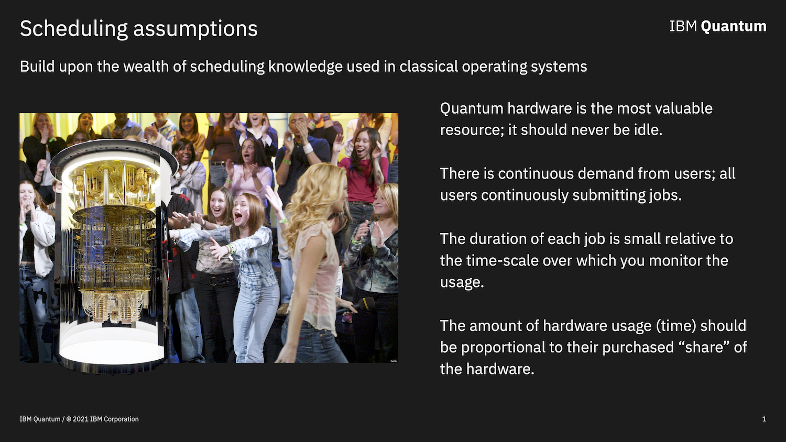

Posted in 2022
Understanding fair-share scheduling
- 26 July 2022
- Services
Here we will introduce the reader to Fair-share Scheduling, the method by which most IBM Quantum systems are accessed. We will go over the basics of Fair-share and understand its behavior via simulation.
Here we import the tools we will need to make a threaded Fair-share scheduling simulation.
Going down the Wormhole
- 14 July 2022
- Examples
Recently our Partners over at Lawrence Berkeley National Laboratory (LBNL) published an interesting paper on probing quantum gravity in the lab: arXiv:2205.14081. This paper caught our eye for two reasons. First, it is about teleportation via wormholes, so why not check it out? Second, it compares our quantum systems verses the trapped-ion systems from Quantinuum. From a competitive standpoint, these types of papers are fun to look at and see if we can do better. Trying to do so is the basis for this notebook. If you want all the details you will need to see the paper, however the basics can be gathered from Figure 1 in the paper:
Basically they are creating entangled pairs of qubits at the beginning; a prerequisite of all teleportation procedures. Doing evolution backward and forward by the same amout of time on the L group, coupling the L and R groups of qubits with a tunable phase g, and then performing the forward evolution again on the R group of qubits, and then measuring the state on the bottom qubit. As a function of the coupling g the expectation value of the Z operator on the last qubit in both simulation and on the real quantum hardware is seen to be: